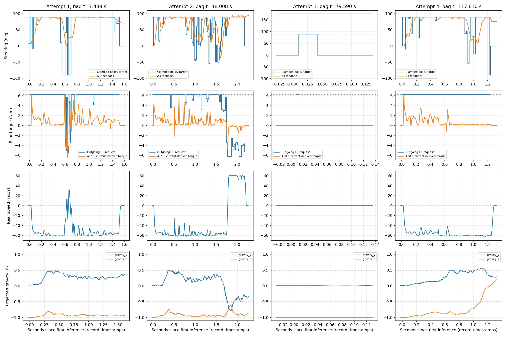
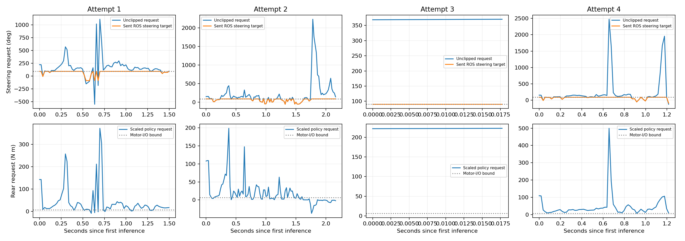
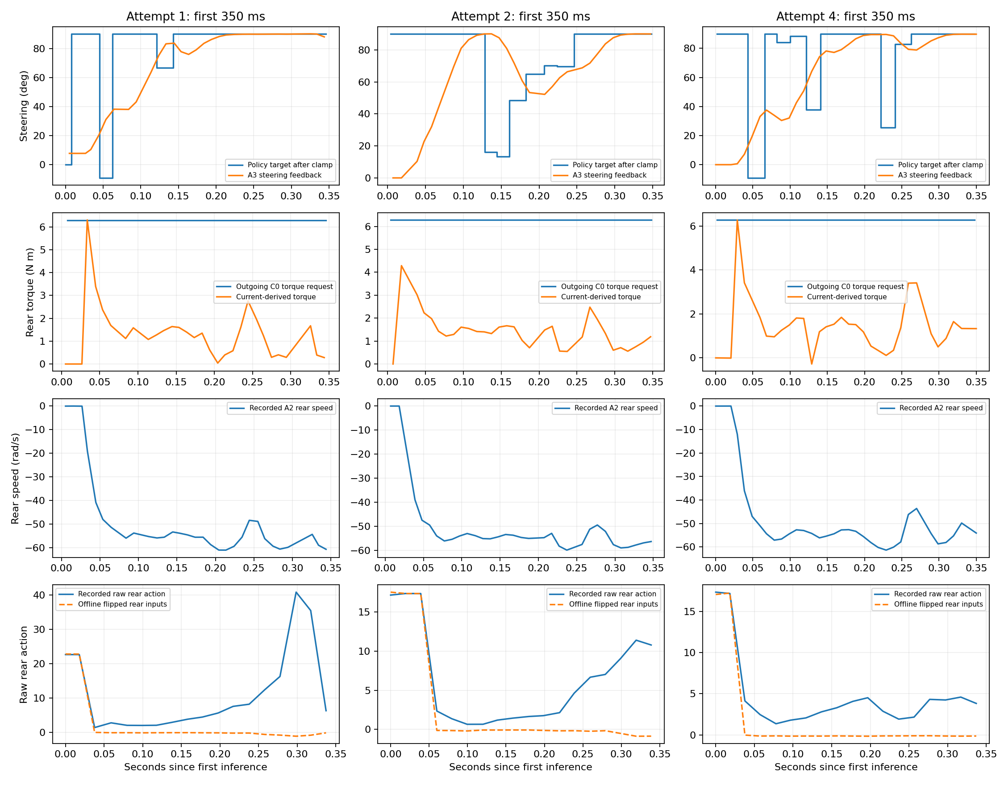
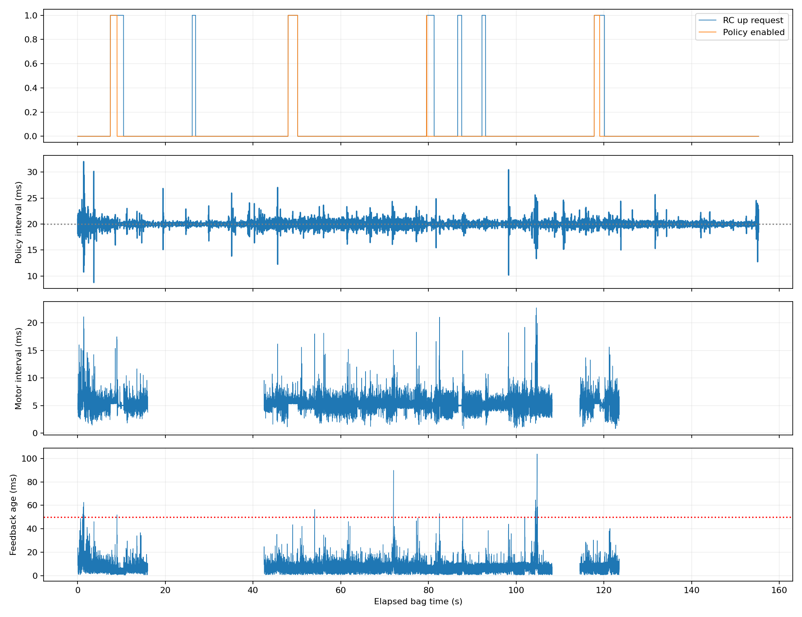

Trackstand deployment diagnosis — 2026-10-12
Report · Statistics · Policy data · Motor-command data
Four attempts: measured targets, feedback and tilt

Unclipped policy requests

First 350 ms; dashed replay is NOT a corrected real-bike experiment

Scheduling and watchdog evidence
